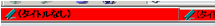
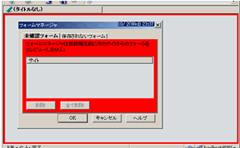
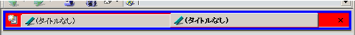
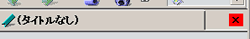
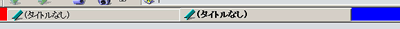
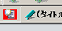
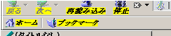

Syntax
基本的にはCSSと同じなので、CSS2とMozilla独自の部分だけ解説します。
属性セレクタ（The Attribute Selector）
特定の属性を持つ要素へのスタイルを定義します。重ねて指定することができ、その場合は指定された属性すべてを満たす要素が定義されます。
属性セレクタには以下の４種類があります。なお、要素と属性の間にスペースを入れてはいけません。
属性値に関わらず、指定された属性を持つ要素
書式
要素[属性] {スタイル}
for example...
tab[disabled] /* <tab disabled="true">、<TAB disabled="false">など */
指定した属性と値を持つ要素
指定した属性が指定した値を持つ場合を定義します。
書式
要素[属性=値] {スタイル}
for example...
tab[disabled="true"] /* <tab disabled="true"> */
指定した属性の値がスペース区切りの単語リストになっている場合
複数の属性値に対応したセレクタです。属性値が半角スペースで区切られたリストになっていて、その属性値の中に指定した文字列が含まれている場合を定義します。
書式
要素[属性~=値] {スタイル}
for example...
button[class~="button-toolbar"] /* <button class="button-toolbar chromeclass-location"> */
指定した属性の値がハイフン区切りの単語リストになっている場合
複数の属性値に対応したセレクタです。属性値がハイフンで区切られた単語のリストになっていて、そのリストの先頭単語が指定した値と同じである場合を定義します。主にlang属性を意識したもので、それ以外にはあまり使われません。
書式
要素[属性|=値] {スタイル}
Mozillaの場合
[disabled="true"]- 現在利用することができないもの。
menuitem[disabled="true"]は、現在選択できないメニュー（文字列を選択していない状態での「コピー」など）を定義します。 [busy="true"]- 現在読み込み中のもの。
tab[busy="true"]は、現在読み込み中のタブを定義します。 [selected="true"]- 現在アクティブになっているもの。
tab[selected="true"]は、現在アクティブになっているタブを定義します。 [container="true"]- 下位にアイテムを保有するもの。
.bookmark-item[container="true"]は、ブックマークメニューのうち中にアイテムを持つもの（フォルダ、ブックマークグループ）を定義します。ただし、menuitemなどにこの属性を付けても変化はありませんでした。 [offline="true"]- オフラインモードになっている場合。
疑似クラス（Pseudo-classes）
要素の名称・属性・内容以外の特徴に基づいて要素を分類します。HTMLではA:linkなどが有名ですが、Mozillaの場合（というかXMLを修飾する場合）はCSS2とはまた別の疑似クラスがあります。
疑似クラスは重ねて指定することができます。その場合、指定した疑似クラスすべてを満たす要素が定義されます。
また、属性セレクタとも併用できますが、その場合、疑似クラスを先に書きます。
書式
要素:疑似クラス {スタイル}
要素:疑似クラス１:疑似クラス２... {スタイル}
要素:疑似クラス[属性=値]
for example...
tab:hover:active /* 現在アクティブになっていて、かつマウスカーソルが上にあるタブ */
主なものは以下の通りです。
hover- 現在マウスカーソルが上にあるもの
active- 現在アクティブなもの（クリックされている状態など）
Element Reference
タブ関係
tab
commentary
タブ。設定ダイアログのタブも含む。属性セレクタと疑似クラスによって状態を細かく設定できる。tab→tab:hoverなど、上位の要素は下位の要素に承継される。
for example...
/* 赤背景 */
tab {
background-color: #ff0000 !important;
}
/* 現在のタブの文字をboldにする */
tab[selected="true"],
tab:hover:active[selected="true"] {
font-weight: bold !important;
}

tabpanels
commentary
各タブの中身の部分。サイト表示部分としては分かりづらいが、marginやpaddingを広くとってみるとどの部分か分かる。「画像マネージャ」など、設定ダイアログのタブも含み、こちらを見た方が分かりやすいと思われる。
for example...
tabpanels {
background-color: #ff0000 !important;
padding: 4px !important;
}

.tabbrowser-tabs, .tabbrowser-strip
commentary
タブバーの背景部分。.tabbrowser-stripは.tabbrowser-tabsの背面になる。
対応xml：toolkit.jar/content/global/bindings/tabbrowser.xml
for example...
/* 青背景 */
.tabbrowser-strip {
margin: 3px !important;
background-color: #0000ff !important;
}
/* 赤背景 */
.tabbrowser-tabs {
margin: 4px !important;;
background-color: #ff0000 !important;
}

.tab-icon
commentary
タブに表示されるアイコン。「読み込み中」アイコンやfaviconもここに表示される。
for example...
.tab-icon {
background-color: #ff0000 !important;
}
.tabs-closebutton
commentary
タブバー右端に表示される、「タブを閉じる」ボタン。
for example...
.tabs-closebutton {
background-color: #ff0000 !important;
}

.tabs-left, .tabs-right
commentary
タブの左右のスペース部分。設定ダイアログのタブも含む。
for example...
/* 赤背景 */
.tabs-left {
padding: 5px !important;
background-color: #ff0000 !important;
}
/* 青背景 */
.tabs-right {
background-color: #0000ff !important;
}

.tabs-newbutton
commentary
タブバー左端に表示される、「新しいタブを開く」ボタン。
for example...
.tabs-newbutton {
margin: 3px !important;
background-color: #ff0000 !important;
}

ツールバー関係
.toolbarbutton-text
commentary
ツールバーに表示されるアイコンの文字。入れ子を使うことで以下のように限定できる。
.toolbarbutton-1 > .toolbarbutton-text- ナビゲーションツールバーのアイコンのテキスト。「進む」「戻る」など、履歴メニューが付いているものは除く。
.toolbarbutton-1 > .toolbarbutton-menubutton-button > .toolbarbutton-text- ナビゲーションツールバーの中の、「進む」「戻る」など、履歴メニューが付いているボタンのテキスト。
for example...
/* 太字＋イタリック＋黄背景 */
.toolbarbutton-text {
font-weight: bold !important;
font-style: italic !important;
background-color: #ffff00 !important;
}
